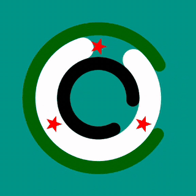
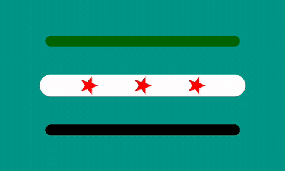
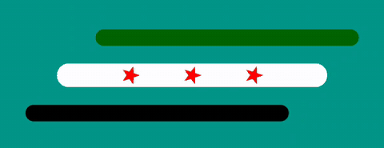

Loading indicators in the colours of the Syrian flag.
Three animated Android views, drawn on the canvas in pure Kotlin. Drop one into a layout at any size and it stays crisp.



Install
Published on JitPack. Two edits to your Gradle files and you're done.
Add the JitPack repository in settings.gradle.kts
dependencyResolutionManagement {
repositories {
google()
mavenCentral()
maven("https://jitpack.io")
}
}
Add the dependency in your module's build.gradle.kts
dependencies {
implementation("com.github.muhammedelsami:SyriaFlagProgressBar:v1.0.4")
}
Components
Each one is a plain View. Use it in XML, create it in Kotlin, or wrap it in AndroidView from Compose. Animation starts when the view is attached and stops when it's detached.
CircleFlagProgressBar
Best in a square viewThree concentric rings spin at different speeds and directions, with three red stars riding the white ring.
<com.muhammed.syriaflagprogressbar.CircleFlagProgressBar
android:layout_width="64dp"
android:layout_height="64dp" />
StarLineProgressBar
Best at about 2 : 1Three horizontal bars. The outer stars glide toward the centre star and back again.
<com.muhammed.syriaflagprogressbar.StarLineProgressBar
android:layout_width="160dp"
android:layout_height="80dp" />
FlagLineProgressBar
Best at about 3 : 1Three horizontal bars with fixed stars. The top and bottom bars slide in opposite directions.
<com.muhammed.syriaflagprogressbar.FlagLineProgressBar
android:layout_width="180dp"
android:layout_height="60dp" />
Any size, same design
Stroke widths, star sizes, spacing and animation distances are all computed from the view's dimensions, so nothing overlaps or gets clipped when you go small.